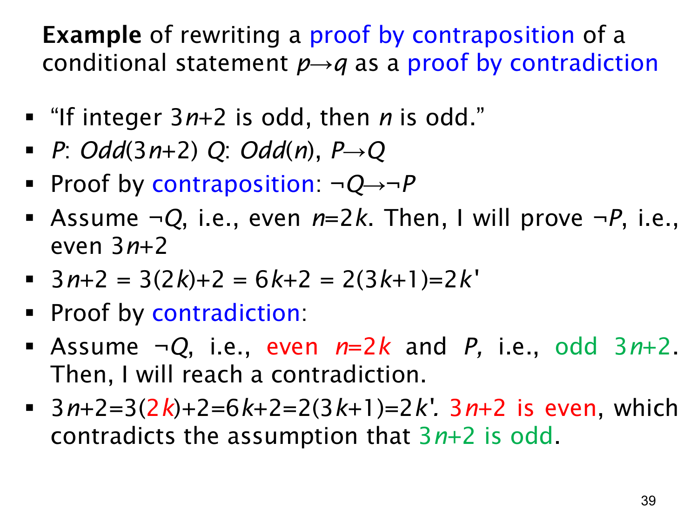

L1.3 · 第 39 页讲解原文
查看这一页课件

同一奇偶命题的逆否证明与反证法
本页沿用第 32 页的命题：“若整数 3n+2 为奇数，则 n 为奇数。”令 P=Odd(3n+2)，Q=Odd(n)，要证明 P→Q。
逆否证明假设 ¬Q，也就是 n 为偶数，写作 n=2k，k∈Z。计算
3n+2=3(2k)+2=6k+2=2(3k+1).
因为 3k+1 是整数，3n+2 为偶数，即 ¬P。于是证明了 ¬Q→¬P，也就证明了原命题。
反证法多加一个假设：同时假设 ¬Q 和 P，即 n 为偶数，但 3n+2 为奇数。由 n=2k 使用刚才同样的等式，仍推出 3n+2=2(3k+1) 为偶数。这与“3n+2 为奇数”的假设冲突；同一个整数不能同时为奇数和偶数。因此 P∧¬Q 不可能成立，原条件命题得证。
两段证明的计算完全相同，只是开头与终点不同。逆否证明把“3n+2 偶”作为结论；反证法把它与预先假设的“3n+2 奇”配对，形成矛盾。检查写法时，务必明确反证法假设的是P 且 ¬Q，而不仅是其中一个。